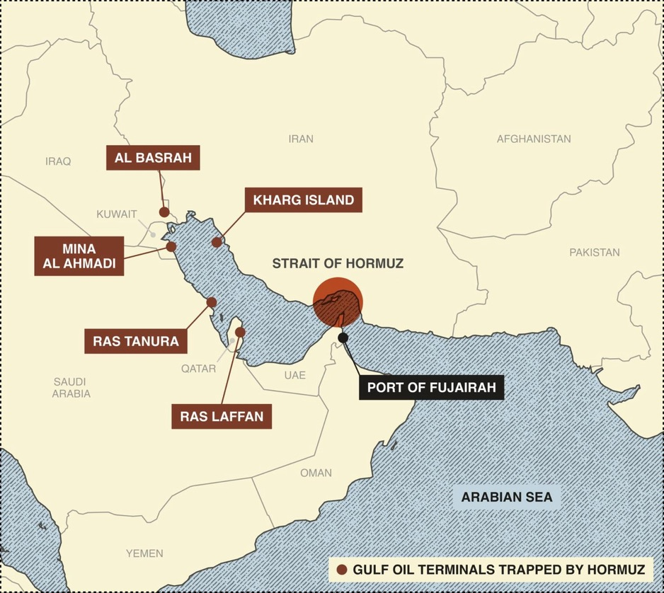

阿联酋的“零霍尔木兹”战略，经由富查伊拉展开
文章翻译、叙述背景及历史知识小贴士
一、文章翻译
以下翻译附件主文《阿联酋的“零霍尔木兹”战略，经由富查伊拉展开》，保留原文的栏目结构、数字、引语和作者判断。附件后半部分自动加载的其他新闻，不属于这篇文章，未纳入译文。
文中涉及2026年战争、军事护航、袭击及港口运营的最新情况，以下按原文译出，不将其与另行核实的历史背景混为一谈。
阿联酋的“零霍尔木兹”战略，经由富查伊拉展开
作者：穆罕默德·塞尔吉（Mohammed Sergie）
Semafor海湾版编辑
2026年10月16日，GMT+8时间下午6时32分
主图：Kevin Zweerink／Semafor。
现场
站在一艘用于引导巨型原油油轮驶入富查伊拉港的大型拖船甲板上，向四周望去，阿联酋加速推进“零霍尔木兹”战略的景象处处可见。
一艘能够运载200万桶石油的油轮，正在港内唯一能够接靠此类船舶的码头装货。较小的船只占据着其他泊位，还有一艘油轮正在海上系泊点装货，一艘阿联酋海军轻型护卫舰在附近警戒。远处朦胧的地平线上，另有几艘油轮停泊着，进行船对船转运，接收那些在美国保护下穿越霍尔木兹海峡运来的石油，再将其送往世界各地的客户。
富查伊拉是阿联酋较贫穷的酋长国之一，过去更多以价格实惠的度假酒店和山间休闲去处闻名。如今，它正处于一场地区性行动的中心：削弱伊朗通过霍尔木兹海峡对海湾贸易施加的影响力。

地理位置已经成为富查伊拉最大的资产，而采取行动的并不只有它。沙特阿拉伯正在扩建输油管网，科威特正在与利雅得和阿联酋磋商，希望通过两国各自的管道输送原油。阿曼也可能成为霍尔木兹海峡运输受阻的受益者，各方正为其港口分别规划管道，以安全运出滞留在海湾内的化石燃料。
对于富查伊拉而言，这场绕开海峡的竞赛，可能带来一座新的液化天然气工厂、一座炼油厂，以及“一个大得多的港口”，能源咨询公司FGE NexantECA荣誉董事长费雷敦·费沙拉基向Semafor表示。
“这场该死的战争，为富查伊拉创造了一个千载难逢的机会。”
图片：Kevin Zweerink／Semafor。
了解更多
早在2月28日美伊战争爆发之前，富查伊拉就已在为这个机会作准备。2012年，阿布扎比开通了一条通往该港口的管道，每天可输送180万桶原油，使自己在霍尔木兹海峡之外拥有了一个出口通道，以备不时之需。
20世纪90年代末拍摄的港口及海岸线照片显示，当时的石油储存和装运基础设施极为有限。如今，港口附近沿海公路的两侧布满储罐区，一张管道网络在各个码头之间、以及码头与船舶之间输送油品。一条从阿布扎比延伸而来的铁路承担货运，最近也开始运送旅客。
看一眼阿联酋地图，把资产向东转移至阿曼湾，似乎是一个依赖资源出口的富裕国家相对容易完成的任务。但地形是一大挑战：崎岖的山脉紧贴海岸，使填海造地成为扩张的唯一方式。
尽管机会显而易见，也几乎没有人怀疑阿联酋政府的执行能力，但这片地区仍然受到影响整个区域的同类风险威胁。
位于霍尔木兹海峡之外，能够为船舶提供一定保护，但船只、储罐区和港口基础设施依然脆弱。伊朗已经对这三类目标都发动过袭击。据两名熟悉情况、且曾与保险公司谈判的人士表示，战争保险一直是富查伊拉运营商面临的问题，保险公司已经表明，需要看到六个月的稳定和平，才会降低保费。
迄今为止，富查伊拉港一直专注于价值最高的贸易，而把建筑材料、消费品和机械的进口及转口贸易，留给迪拜和阿布扎比规模大得多的设施。
这种情况正在改变。如今，货运卡车沿着公路排出约10英里的长队，等待进入港口的机会。据一名熟悉港口运营的人士表示，船对船转运业务正在迅速增加，从战前的寥寥数次，增至8月的80次和9月的120次。转运的货物主要是原油，但也包括铝、铝土矿和钢材。
在迪拜咨询公司Gulf Intelligence举办的能源市场论坛期间，一场晚宴上，“韧性”这个词被反复使用，几乎有些泛滥；但在这里，它确实恰如其分：这些人帮助石油从世界上最动荡的地区之一持续运出，已有近一个世纪。
这个行业的繁荣与萧条周期也被谈及。富查伊拉历史上的优势，是作为穿越霍尔木兹海峡船舶的一个衔接点，但阿曼还有其他港口可供停靠，而且阿曼与伊朗的关系比海湾其他任何国家都更友好。没有人能够回答的问题是：一旦航运公司能够重返原来的航线，危机期间的繁荣是否还能延续。
不过，对于富查伊拉居民而言，港口附近那些填海造地形成的空地，可能很快就会容纳一座液化天然气工厂及其他生产性资产；仅这一点，或许就足以帮助他们追赶上阿布扎比和迪拜更富裕的同胞。
穆罕默德的观点
伊朗威胁关闭霍尔木兹海峡已有数十年。海湾国家未必忽视了这一威胁，但它们在很大程度上仍然按照这条水道将继续维持自由通航的常态来行事。
沙特阿拉伯和阿联酋对管道的投资具有先见之明。但它们与那些在霍尔木兹海峡之外没有出海通道的邻国一样，将大部分投资集中在海湾内部的城市和工业区，置于伊朗导弹射程之内，选择优先推动国内经济发展。
如今，这一地区的发展方向是冗余和韧性。除了投资不同路线，并选择其中最有效的路线，海湾国家没有多少其他选择。如果实现和平，一些管道和港口可能会阶段性闲置。但当敌人攻击这些经济体的命脉时，这就是保持能源和货物流动所要付出的代价。
所有这些矛盾，都在富查伊拉的繁荣中清晰可见：地理上的眷顾，并不能让它免受冲突影响。伊朗对富查伊拉及该地区其他管道的袭击，预示着这样一种未来：海湾国家可能还需要为自己的替代方案准备替代方案。
不同意见的空间
富查伊拉和阿曼，是维持石油及其他出口流动的努力的受益者。但要把霍尔木兹海峡变成美国财政部长斯科特·贝森特所说的“一片毫无价值的水域”，始终是夸大其词。
的确，得益于管道运输和美国军方对油轮的护航，原油流量已大体恢复。但液化天然气、化肥、金属、氦气及其他出口商品，以及6000多万人赖以生活的全部进口物资，不可能都通过替代路线高效运输。
与此同时，卡塔尔能源部长一直明确反对修建天然气管道，以及将加工设施迁往其他国家，而是坚持在拉斯拉凡扩大液化天然气生产。
对于其他出口商来说，改用卡车运输也算不过账。全球最大的尿素和合成氨化肥出口商之一Fertiglobe的首席执行官告诉我，一艘典型货船可运载5万吨化肥。要替代它，大约需要2000车次的卡车运输。
值得关注
-
能源专家罗宾·米尔斯在《国民报》撰文指出，富查伊拉在战争期间发挥的作用，体现了多年在管道、港口和贸易能力方面投资的成果。
-
据彭博社报道，阿布扎比王储谢赫哈立德·本·穆罕默德正领导推动落实阿联酋的“零霍尔木兹”战略，利用其担任主席的主权财富基金投资物流领域。
文中地图标注
伊朗、阿富汗、伊拉克、巴士拉、哈尔克岛、科威特、米纳艾哈迈迪、霍尔木兹海峡、巴基斯坦、拉斯坦努拉、卡塔尔、阿联酋、沙特阿拉伯、富查伊拉港、拉斯拉凡、阿曼、阿拉伯海、也门。
地图图例：受霍尔木兹海峡制约的海湾石油终端。
二、这篇文章叙述的背景
1. “零霍尔木兹”不是海峡不再重要，而是减少对单一出口通道的依赖
霍尔木兹海峡连接波斯湾与阿曼湾。海湾内部的油气出口设施若要通过海路进入外海，通常需要经过这条通道。富查伊拉位于阿曼湾一侧，其价值在于：原油如果先通过陆上管道运抵这里，再装船出口，就可以绕过海峡这一瓶颈。
因此，本文所说的“零霍尔木兹”，更适合理解为降低依赖、建立绕行能力的战略目标，而不是已经实现所有贸易均不经海峡。作者在“不同意见的空间”中也明确指出，原油、液化天然气、化肥、金属和进口消费品，无法全部以相同方式改道。
2. 富查伊拉的战略地位，是长期建设的结果
阿布扎比原油管道，又称哈卜善—富查伊拉管道，于2012年投入运营，将阿布扎比的陆上油田与富查伊拉出口设施连接起来。它的意义不是增加油田本身的产量，而是改变出口路径，使部分原油不必进入霍尔木兹海峡。
管道能力存在不同表述口径：美国能源信息署2023年的资料列为150万桶/日，2025年的资料列为180万桶/日；相关项目资料也区分日常输送量与可提升的能力。因此，研究时应注明资料年份，并区分实际输量、运行能力与设计能力，不能把180万桶/日直接当作每天已经实现的出口量。
3. 沙特与阿联酋的绕行路线，通向不同海域
两国都建设了绕过霍尔木兹海峡的原油通道，但出口方向不同：
| 国家 | 主要绕行通道 | 出口方向 |
|---|---|---|
| 阿联酋 | 阿布扎比陆上油田通往富查伊拉的管道 | 阿曼湾 |
| 沙特阿拉伯 | 从阿布盖格石油处理中心通往延布的东西向输油管道 | 红海 |
美国能源信息署2025年的说明列出，沙特东西向原油管道能力为500万桶/日，并指出沙特曾在2019年通过改造部分天然气液管道，将能力临时提高至700万桶/日。
这意味着，“绕过霍尔木兹”并不只有一种方案。各条路线的价值，取决于油源能否接入、管道还有多少可用能力、出口港能否装运，以及目的地航线是否安全，而不仅是地图上的距离。
4. 文章真正讨论的是“效率”与“保险价值”的取舍
在正常时期，企业倾向于使用成本较低、设施成熟的运输路线；在危机时期，平时利用率不高的备用管道和港口，却可能成为维持出口收入的关键。作者因此把闲置能力视为保障经济命脉所需支付的代价。
但富查伊拉的机会也有局限：新增港口、储罐、炼厂或液化天然气设施，需要长期投入，而战争期间转移来的贸易，未必会在和平恢复后全部留下。文中“危机繁荣能否持续”的问题，正是新增投资能否获得长期回报的核心。
三、历史知识小贴士
小贴士一：2012年管道投运，说明“绕开霍尔木兹”并非战争后的临时想法
哈卜善—富查伊拉管道在2012年就已投入运营，早于本文描述的2026年危机。其建设反映了一种长期风险管理思路：即使海峡仍能通航，也要保留不经过海峡的出口选择。
因此，富查伊拉在危机中获得的优势，来自此前建设的管道、储存和装运网络，而不是仅凭“位于海峡外侧”就自动形成。地理位置提供条件，基础设施才把条件转化为实际运输能力。
小贴士二：2019年富查伊拉附近船舶遇袭，早已显示“海峡之外”不等于安全区
2019年5月12日，四艘商船在富查伊拉附近、阿曼湾水域受损，包括两艘沙特油轮、一艘挪威油轮和一艘阿联酋加油船。阿联酋将事件称为“破坏袭击”。
阿联酋、沙特和挪威随后向联合国安理会提交的初步调查认为，这是一场复杂、协调的行动，很可能使用了吸附式水雷，并认为国家行为体最有可能具备实施能力；但这份调查没有公开点名具体责任国。美国方面曾指向伊朗，伊朗否认参与，不能把这些不同层次的说法合并为已经获得一致认定的结论。
这段历史与本文的直接联系是：绕过海峡能够减少一种地理瓶颈风险，却不能消除港外锚地、油轮、储罐和码头遭袭的风险。
小贴士三：船对船转运，不等于石油已经绕过海峡
船对船转运，英文通常称为STS，即货物在两艘船之间转移。它解决的是运输组织和装卸衔接问题；货物是否经过霍尔木兹海峡，则取决于此前的运输路径。
本文现场描述的一部分石油，是先在美国保护下穿越海峡，再在富查伊拉附近转运；而管道输送至富查伊拉的原油，才是通过陆路绕过海峡。两者都能推高富查伊拉业务量，但对“降低海峡依赖”的贡献并不相同。
小贴士四：原油管道不能直接替代液化天然气的出口链条
文章将原油与液化天然气分开讨论，并非偶然。原油绕行的前提，是油田能接入通往海峡外出口港的管道；卡塔尔的液化天然气则依赖其既有加工和出口设施。文中提到，卡塔尔能源部长反对把加工设施迁往其他国家，仍选择在拉斯拉凡扩张。
因此，判断绕行方案时，需要逐一追问：运输的是什么商品、生产设施在哪里、能否接入替代通道、港口能否处理，以及替代运输的规模和成本能否承受。本文以“5万吨化肥约需2000车次”说明，海运与公路运输并不具备简单的一比一替代关系。
四、阅读这篇文章时最重要的区分
本文的核心不是“霍尔木兹海峡已经失去价值”，而是海湾国家正为单一通道失灵建立冗余。富查伊拉既是管道绕行出口港，也是储存、转运和物流节点；这些功能能够相互促进，却不能混为一个指标。
用于研究或市场简报时，尤其应区分：
-
管道最大能力与实际可增加的输送量。
-
港口转运业务增长与真正绕过海峡的货量增长。
-
原油运输恢复与全部油气、工业品及进口贸易恢复。
-
位于海峡之外与免受区域军事风险影响。
来源说明
原文译文：用户提供的Semafor文章附件，The UAE’s “Zero Hormuz” strategy runs through Fujairah，Mohammed Sergie，2026年10月16日。
管道与海峡背景：美国能源信息署（EIA），Amid regional conflict, the Strait of Hormuz remains critical oil chokepoint，2025年6月16日；The Strait of Hormuz is the world’s most important oil transit chokepoint，2023年11月21日。
管道历史：Global Energy Monitor，Habshan–Fujairah Oil Pipeline。
2019年事件背景：May 2019 Gulf of Oman incident及当时关于富查伊拉商船遇袭、调查与各方表态的相关报道。
本文件为上一条回复的Word整理版。文章译文与补充背景分列；关于2026年最新事件的叙述沿用原报道，不代表已独立核实。图片仅保留说明，未嵌入原图。